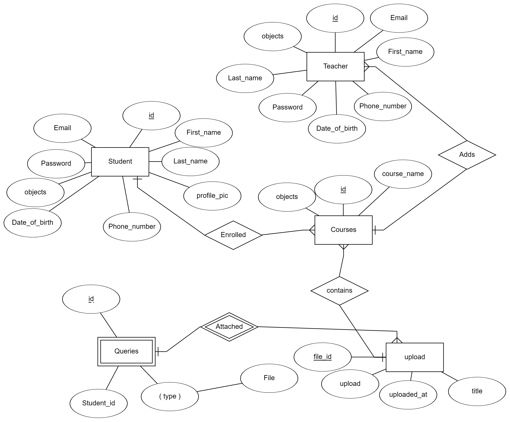

Software Design Specification for Odhyayon
1. Introduction
1.1 Purpose
The purpose of this design document is to present the system design plan of our
project named 'Odhyayon'. This document is based on the Software Requirement
Specification(SRS) of Odhyayon and will provide details about:
- 1. Detailed Description of Design Components
- 2. Class Diagrams
- 3. Detailed Description of classes
- 4. Database Design
- 5. Database Details
- 6. High Level Component Design
- 7. Architectural Design
1.2 Scope of Project
This software will be a platform for teachers and students to engage in convenient learning. Teachers can create classroom,
assign reading materials for students and assign deadlines for it. It will help the both parties to maintain a class in a disciplined manner.
1.3 Definitions, Acronyms and Abbreviations
- User - Person using the software.
- Admin - Person having the access into the system and database.
- SDS - System Design Specification.
- UML Diagram - Unified Modeling Language Diagram.
- Home page - The 1st page that user will see while visiting the application.
- Registration Page – The initial page to allow users to register.
- Login Page – The initial page to allow registered user to login .
- ERD - Entity Relationship Diagram
1.4 Document Conventions
This document is styled according to IEEE SDS template.
1.5 References
2. Description of Design Components
This content provides a basic overview of the design procedures of a few key components of the software. The tables will exhibit more details on key components:- Database: We will use MySQL in our database system. It will contain tables to describe diverse classes of information and will likewise discuss connections and dependencies between each table.
- Server Software: Our server software will directly manipulate the contents of the database
- Web User: The User Software will live on a workstation and will be likewise accessible on both platforms. Our goal is to give the teachers a lively platform on which they can teach and give students a smooth experience on learning things.From here they can create classrooms, add materials and receive questions from students.
- Android User: All the functionalities available in web will be available here too.
3. High-Level Component Design

4. Class Diagrams

5. Database Design
- ER Diagram
-Further Elaboration
Table: Teachers
Purpose: This table will hold the information of the teachers signing up for the service of Odhyayon. The stored information will be fetched during different interections a teacher makes with the interface of the website and the app.
Attributes:
Table: Students
Purpose: This table will hold the information of the students signing up for the service of Odhyayon. The stored information will be fetched during different interections a student makes with the interface of the website and the app.
Attributes:
Table: Courses
Purpose: This table will hold the information of the courses being created by a teacher. The stored information will be fetched during different interections a student and a teacher makes with the interface of the website and the app.
Attributes:
Table: Uploads
Purpose: This table will hold the information of the materials being uploaded in a course by a teacher. The materials will be available for students when they check the dashboard of the classrooms.
Attributes:
Table: Queries
Purpose: This table will hold the information of the queries attached by students, when they go through a certain material.
Attributes:
6. Implementation Plan
6.1 Approach
The system is developed following waterfall model life cycle. The steps are
requirement analysis,design, implementation and unit testing, integration and
system testing and lastly maintenance. The system will be developed under super
vision and rigorous testing to avoid bugs and meet the desired result.
6.2 Design Pattern
We are using MVC (MODEL-VIEW-CONTROLLER) design pattern provided by Django framework. MVC helps in avoiding mixture of code from different classes designed.
It has a common database for android app and website that can be accessed through server remotely to create, view and update.
• The model component- Handles the data and data flow of the system and performs various operations on data.
• The view component- This component is responsible for how the data is represented to the user and how they interact with the data.
• The controller component- Manages user interaction and passes these interaction to the view and the model.
There are various ways in which to visualize and interact with system data. Same data can be represented differently based on different scenarios. Also when we will need to change the view of any specific part of the system, changing the view will suffice rather we would have to change the whole thing along with data. This will also make code more manageable as the various components are separated and in the same time inter-connected to ensure the date flow, connectivity between the components and full functionality of the system.
• The model component- Handles the data and data flow of the system and performs various operations on data.
• The view component- This component is responsible for how the data is represented to the user and how they interact with the data.
• The controller component- Manages user interaction and passes these interaction to the view and the model.
There are various ways in which to visualize and interact with system data. Same data can be represented differently based on different scenarios. Also when we will need to change the view of any specific part of the system, changing the view will suffice rather we would have to change the whole thing along with data. This will also make code more manageable as the various components are separated and in the same time inter-connected to ensure the date flow, connectivity between the components and full functionality of the system.